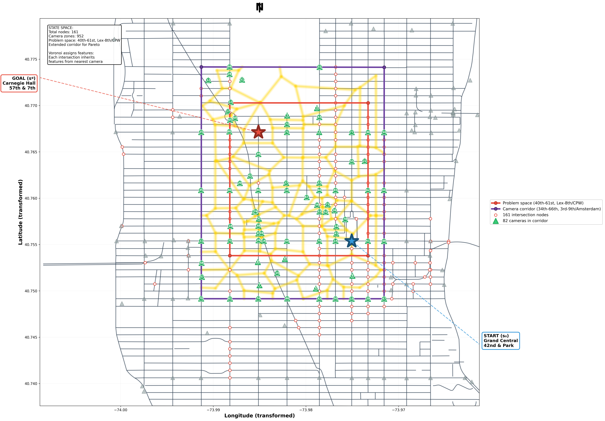

Multi-Scale Signal Processing for Learned Heuristic Pathfinding
Problem Space

Camera Corridor
Introduction
Subject Area
The work operates within Artificial Intelligence Search and Reasoning Systems, focusing on heuristic search, knowledge representation and perception-based reasoning. It links foundational AI theory to sensory modeling using computer vision and urban data streams.
Classical pathfinding algorithms (A*, weighted A*) are extended by incorporating perceptually informed heuristics derived from live camera data. This connects abstract state-space search to embodied decision-making in dynamic environments.
Project Type and Rationale
An Applied Project applies known methods to realistic situations, blending heuristic search (A*, weighted A*) with machine learning (Ridge regression, feature engineering) on real urban data to evaluate perceptually informed navigation.
The work applies course concepts (uninformed search, informed search, constraint satisfaction, knowledge representation) to sensory data from a dynamic environment. Cost and optimality are extended to include perceptual load and behavioral friction.
Problem Statement
Traditional pathfinding algorithms optimize for geometric distance or travel time but fail to capture the energetic and perceptual dynamics of movement in dense urban environments. In Manhattan, the cost of traversing a route is not defined by distance alone but by sensory and behavioral complexity: crowding, visual noise, infrastructure gaps and movement unpredictability.

This work develops a perceptually informed heuristic for A* search using NYC traffic camera data. The heuristic models environmental resistance by extracting features from visual data. Human pedestrians naturally avoid stressful routes based on crowded intersections, poor lighting and aggressive traffic patterns; this approach encodes similar avoidance behavior.
Key Research Question: Can learned heuristics from vision-based environmental features outperform standard Manhattan-distance baselines in predicting route stress and improving path interpretability?
Approach
Problem
Traditional pathfinding algorithms optimize for geometric distance but fail to capture the energetic and perceptual dynamics of movement in dense urban environments. Routes involve sensory complexity: crowding, visual noise, infrastructure gaps, and unpredictability.
Approach
Develop a perceptually informed heuristic for A* search using NYC traffic camera data. The heuristic models environmental resistance by extracting features from visual data—encoding how pedestrians naturally avoid stressful routes.
Study Area
Grand Central → Carnegie Hall corridor
Manhattan: 40th-61st Streets, Lexington Ave to 8th Ave
161 intersection nodes • 82 camera zones
Start: Grand Central (42nd & Park)
Goal: Carnegie Hall (57th & 7th Ave)
Methodology
h(n) = w^T * f(zone(n))
Data Collection Dashboard
Most Recently Collected Image
Collection Status
Current Collection
Zone: Purple corridor (34th-66th St)
Target: 672 images/camera over 14 days
Scheduler: pax-collector-schedule (every 30 minutes)